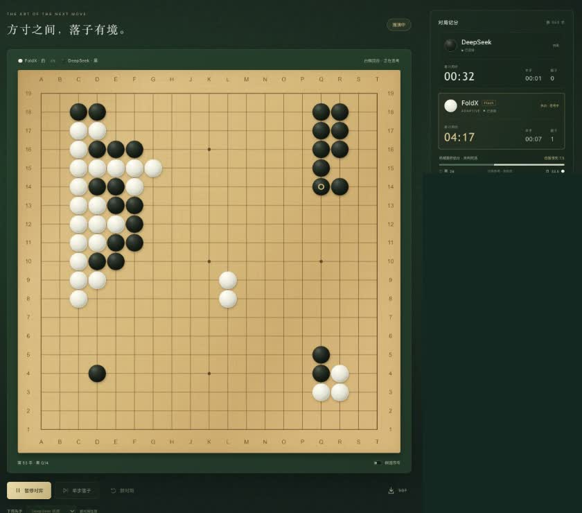

CASE 01 / Intelligence and strategic judgment
Read the board. Choose the next move.
Fold-X Flash plays White against DeepSeek on a 19×19 Go board. The game shows a sequence of decisions that depend on the position, the available moves, and their consequences.
The starting point is strategic judgment: understanding a situation within a clear set of rules and choosing how to act.
Where this can help · A demonstration of the kind of judgment needed to compare options and weigh immediate gains against longer-term consequences.
What the recording shows
- The final interface estimates a lead of 80.5 points for White. The specific DeepSeek version was not provided.
- The video preserves the order of play and focuses on the board and score display.
This is an interface estimate from one game, not an independently adjudicated result, a multi-game win rate, or a general intelligence benchmark.
Reading the speed claims · Playback is accelerated to 5× for viewing. This is not a measurement of model response speed.
Key frames

